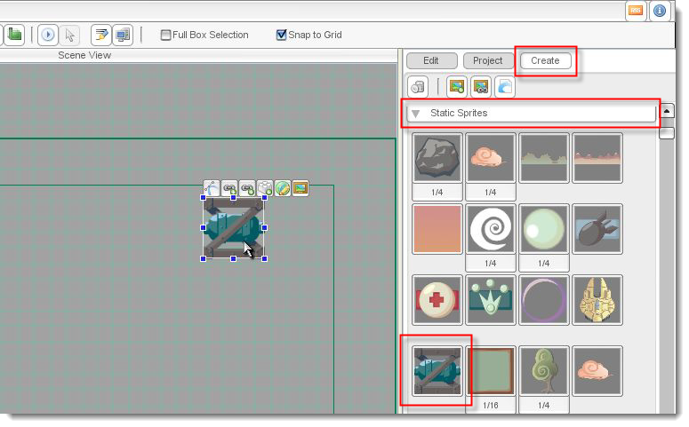
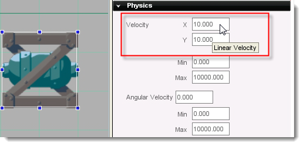
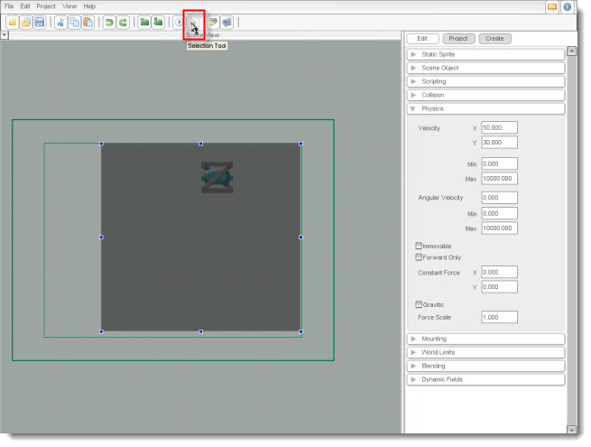
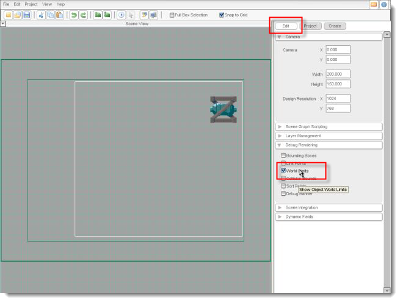

Torque 2D - World Limits Tutorial
In this tutorial, you'll learn how to set up and use world limits in Torque 2D (T2D). 'World limits' are an object's boundaries within a game. That is, an object's world limits define the area the object can occupy in your world.
To prepare for this tutorial, run Torque 2D and load the TutorialBase
project (if it's not already loaded) by choosing Open Project... from the file menu and
selecting games/TutorialBase. Next, create a new scenecreate a new scene. Finally,
save your scenesave your scene by the name "WorldLimit".
For this tutorial, we'll just use one object to examine all the possibilities of the Torque 2D world limit system. In the Create tab on the right side of the Scene Editor, open the Static Sprites section. Drag the girder-like crate (space_crateImageMap) into the Scene View.

In order to see the effects of world limits, we're going to want this object to move. First, make sure that the crate is selected by clicking on it. Next, click the Edit tab on the right side of the screen and scroll down to the Physics section. Open that section by clicking it, then change Velocity X to "10" and Velocity Y to "10". Save your scene, then press the Play button Play button. If everything is done right, you should see the crate slide off the screen to the right.

Figure 2
In order to see world limits at work, we need to define those limits for our crate. To do this, select the crate object in the Scene View and keep your mouse over it. You'll see the Object Editor Toolbar appear over it... select Change the world limits for this object. Click it, and the view will zoom out to show you the current world limits of the crate, which is shown as a gray rectangle.
Drag the sizing handles (blue squares) until the world limits are within the blue camera view box. When this is complete, click on the Selection Tool (white arrow) in the toolbar, or hit Enter. This saves the world limits and returns you to the normal view.

Now we are set up to experiment with the various response modes. Every object in your game has its own world limit response settings. Select the crate, then open the World Limits section in the Edit tab. Assuming you haven't fiddled with this already, you'll just see the Limit Mode property set to OFF. Set it to NULL (as shown in Figure 5), and you'll see the coordinates that define the crate's world limits, as well as the Callback checkbox. We won't go too deeply into the Callback checkbox here, but suffice it to say that it is used when you want to script your object's limit response in an onWorldLimit function.

Okay, time for the fun part: trying each response mode. We'll go through the definitions here; you should go ahead and set the Limit Mode to each of these, then click Play to see the mode in action.
OFF: The world limits are not even tested by the object.
NULL: The world limits are tested, but no action is taken when the object reaches the limits; it just continues on its way. This mode is used in combination with the Callback checkbox to script your own responses to reaching the world limits.
BOUNCE: The object bounces off the world limits in a simple, pong-like way and doesn't include spin.
CLAMP: The object slides along the world limits and will not move past them.
STICKY: The object stops all movement when it touches the world limits.
KILL: The object deletes itself when it touches the world limits.
If you ever want to see the world limits in the Scene View, click on an empty area of the Scene View and open the Debug Rendering section in the Edit tab. In this section, select the World Limits checkbox, and you'll see the crate's world limits displayed in white . Note that you will not see anything for objects that have Limit Mode set to OFF.

This tutorial has covered most of the basics of world limits in T2D. These represent very simple possibilities for world limits, and you will often want to script additional effects. One of the most useful of the basic responses is KILL, which can easily take care of any objects (like shots or the like) that go flying off the screen. Whatever your specific needs, you now have a solid jumping off point.